voor collega's
Zo gebruik je dit in je les
Stap voor stap, met plaatjes erbij. Op de plaatjes staan rode kaders met een cijfer erbij: die zetten een rand om precies datgene waar je moet zijn. Je hoeft niets te installeren en het kost niets.
- Leerlingen gaan naar meneergreidanus.nl/leermiddelen, kiezen een vak en een spel, en oefenen.
- Wil je zien wat ze doen? Log in met Microsoft, maak een klascode en geef die aan je klas. Leerlingen vullen hem één keer in; daarna zie jij hun uitslagen.
- Klassikaal? Doe de Klasquiz of Tekenslag op het digibord. Leerlingen doen mee met hun laptop.
- Klikken
- één keer op de linkerknop van de muis drukken. Op een aanraakscherm: tikken met je vinger.
- Adresbalk
- de balk bovenin je browser waar het webadres staat. Daar typ je meneergreidanus.nl in.
- Klascode
- vier letters die bij jouw klas horen, bijvoorbeeld KJEA. Leerlingen vullen die één keer in.
- Bijnaam
- de naam die een leerling zelf intypt en die jij in het overzicht ziet staan.
- Digibord
- het grote scherm voor de klas. Daar open je een spel dat je samen speelt.
- Inloggen
- je aanmelden met je schoolaccount van Microsoft. Voor een leerling mag het, voor jou als docent hoort het erbij. Zie stap 5.
Wat ziet een leerling?
Zo ziet de leeromgeving eruit. Je hoeft niets in te stellen: je klas kan meteen beginnen.
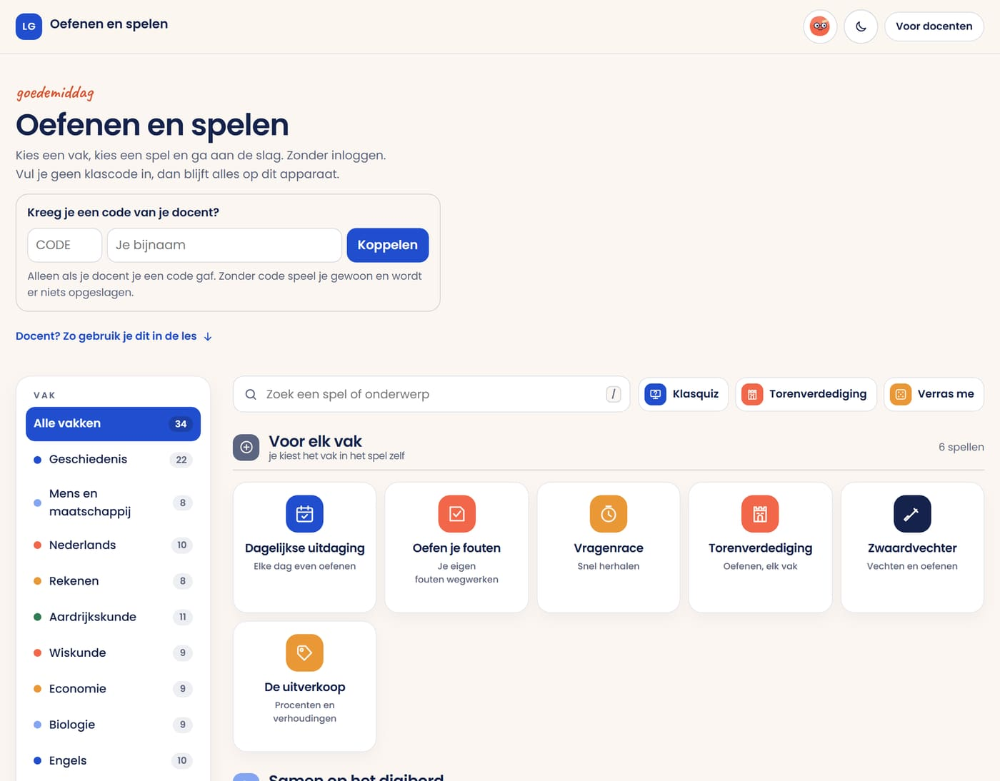
1 2 3- Links staan de vakken. Klik op een vak en je ziet alleen de spellen van dat vak.
- In het midden staan de spellen. Klik op een spel en het begint. Bij elk spel staat een regel uitleg.
- Rechtsboven staat het rondje met het gezichtje. Daar vult een leerling straks jouw klascode in (stap 4).
Het docentgedeelte openen
Alles voor de docent staat op één pagina: meneergreidanus.nl/docent. Typ dat in de adresbalk en druk op Enter. (Of klik rechtsboven in de leeromgeving op Voor docenten.)
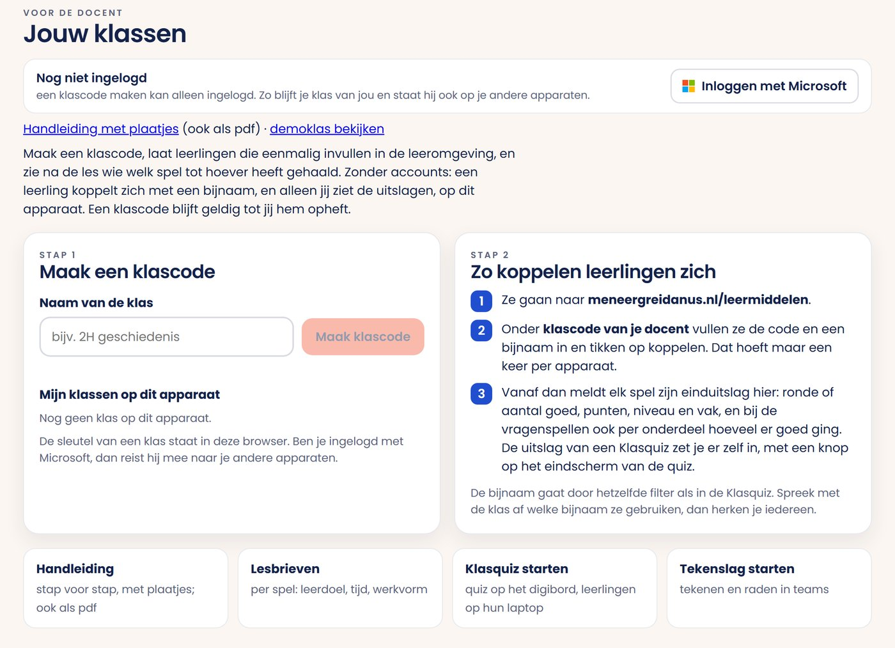
1 2 3- Bovenin staat of je bent ingelogd. Ben je dat niet, klik dan op Inloggen met Microsoft (zie de volgende bladzijde). Zonder inloggen kun je geen klascode maken.
- Hier maak je een klascode en zie je je klassen.
- Onderaan staan de handleiding, de lesbrieven, de Klasquiz en Tekenslag.
Maak een klascode
Een klascode is vier letters, bijvoorbeeld KJEA. Daarmee komen de uitslagen van je klas bij jou terecht. Het maken duurt tien seconden. Je moet wel eerst ingelogd zijn.
- Klik in het witte vak onder Naam van de klas en typ de naam, bijvoorbeeld: 2H geschiedenis.
- Klik op de knop Maak klascode. Je code verschijnt meteen eronder. Schrijf hem op het bord.
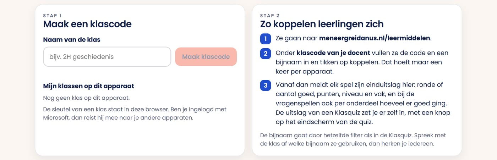
1 2Leerlingen koppelen zich
Dit doen de leerlingen zelf, één keer per laptop. Zeg dit letterlijk tegen je klas:
- Ga naar meneergreidanus.nl/leermiddelen.
- Klik rechtsboven op het rondje met het gezichtje. Er klapt een venster open.
- Typ onderaan bij CODE de vier letters van het bord.
- Typ ernaast bij Je bijnaam je voornaam.
- Klik op de blauwe knop Koppelen. Klaar: er staat nu dat je gekoppeld bent.
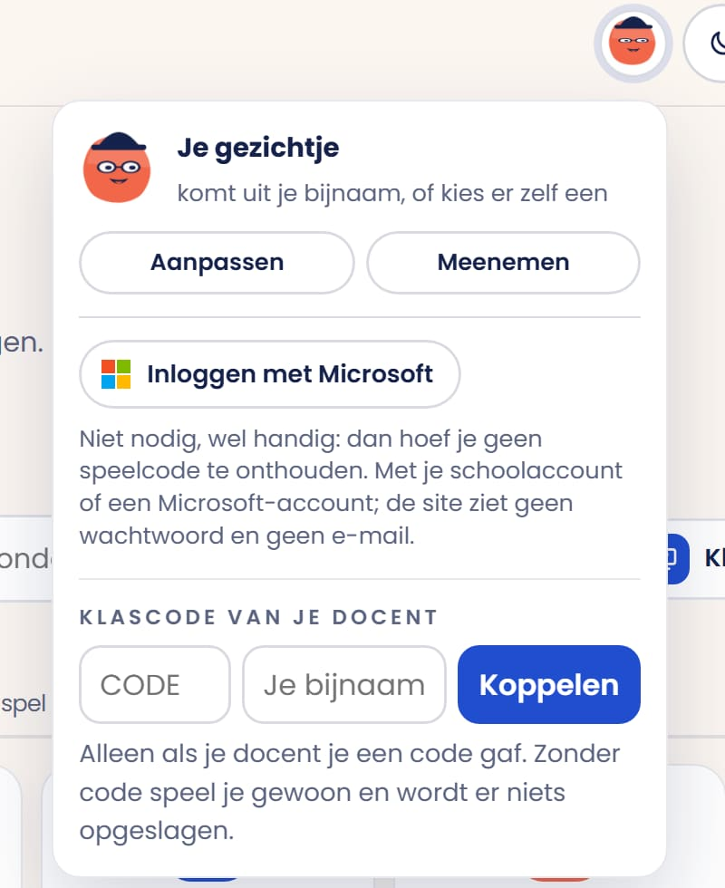
3 4 5Inloggen met Microsoft: wat is dat?
Voor een leerling is inloggen een keuze: alles werkt ook zonder. Voor een docent hoort het erbij, want een klascode maken kan alleen ingelogd. Hieronder staat wat het is en wat het oplevert.
- Klik op Inloggen met Microsoft.
- Je komt op het bekende inlogscherm van Microsoft. Kies daar je schoolaccount (of een gewoon Microsoft-account) en typ je wachtwoord.
- Je komt vanzelf terug op de site. Rechtsboven staat dan je naam. Meer gebeurt er niet.
Wat levert het op?
- Voor jou als docent: je klassen reizen mee. Maak je thuis een klascode, dan staat die klas ook op de computer in je lokaal en op het digibord. Je kunt je klas dus niet kwijtraken, en daarom kan een klascode maken alleen ingelogd.
- Voor een leerling: zijn voortgang, zijn gezichtje en zijn munten gaan mee naar elk apparaat. Munten verdient hij met goede antwoorden en geeft hij uit aan hoeden, brillen en achtergronden.
- Leerlingen hoeven niet in te loggen. De uitslagen lopen via de klascode en werken ook zonder.
Kies wat je klas ziet
Je kunt per klas aanvinken welke spellen je leerlingen zien. Handig als je wilt dat iedereen met hetzelfde bezig is. Kies je niets, dan zien ze gewoon alles.
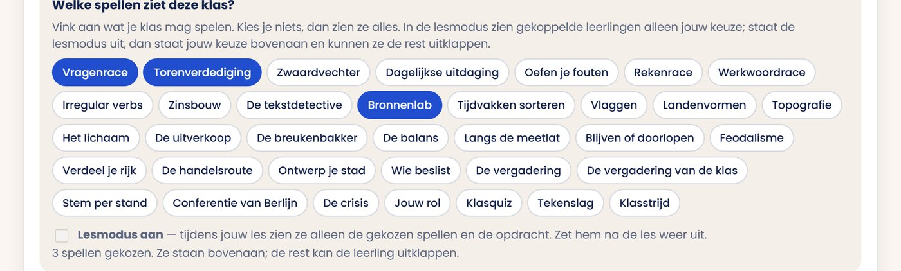
1 2- Klik de spellen aan die je klas mag spelen. Ze kleuren blauw. Nog een keer klikken zet ze weer uit.
- Zet Lesmodus aan als je wilt dat ze tijdens jouw les echt niets anders zien. Vergeet niet hem na de les weer uit te zetten.
Bij je leerlingen staan die spellen bovenaan onder Van je docent. Staat de lesmodus uit, dan kunnen ze de rest nog uitklappen onder "Alle andere spellen". Staat hij aan, dan zien ze alleen jouw keuze.
Kijk wat je klas kan
Na elk potje meldt het spel de uitslag bij jouw klascode. Ga naar het docentgedeelte (meneergreidanus.nl/docent) en klik op je klas. Je ziet het meteen. Je hoeft zelf niets bij te houden.
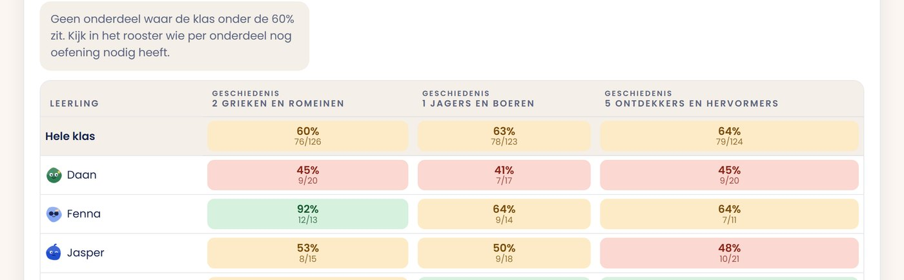
1 2 3- Bovenaan staan de onderdelen, bijvoorbeeld "2 Grieken en Romeinen". Het onderdeel dat het slechtst gaat, staat vooraan.
- De rij eronder is de hele klas bij elkaar.
- Daaronder staat elke leerling met zijn eigen percentages.
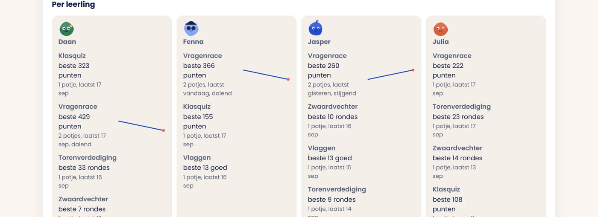
Geef een opdracht mee
Huiswerk opgeven kan ook. Je vult één regel in en ziet daarna wie het gehaald heeft.
- Ga naar meneergreidanus.nl/docent, klik op je klas en zoek het blok Opdracht voor de klas.
- Kies in de hokjes achter elkaar: het spel, het vak, eventueel één onderdeel, het minimum en de datum.
- Klik op Zet opdracht. Klaar.
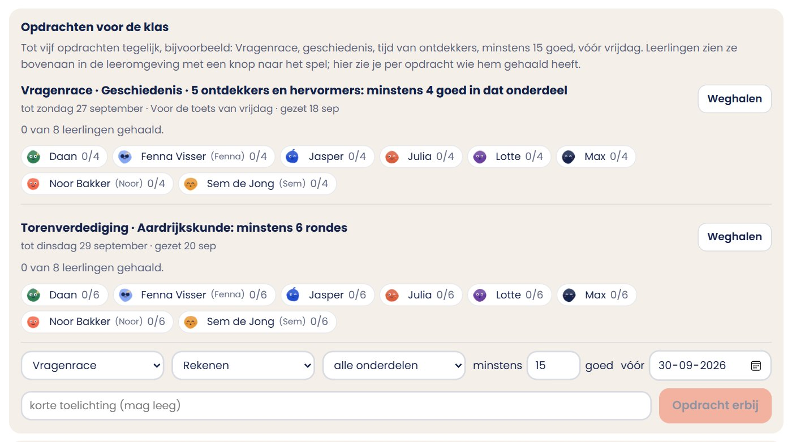
1 2De leerling ziet de opdracht bovenaan zijn leeromgeving, met een knop die hem direct naar het goede spel en het goede onderdeel brengt. Hij hoeft dus niets te zoeken.
Voorbeeld: Vragenrace, geschiedenis, tijd van ontdekkers, minstens 15 goed, vóór vrijdag.
Samen op het digibord
Twee spellen speel je klassikaal. Jij opent een kamer op het digibord, de leerlingen doen mee met hun laptop. Ze hoeven daarvoor niets te installeren.
- Open op het digibord meneergreidanus.nl/leermiddelen/klasquiz.html (of klik in de leeromgeving op Klasquiz).
- Kies rechts waar de vragen vandaan komen: uit de vragenbank (vak en onderdeel) of je eigen vragen.
- Klik op Open een kamer. Op het bord verschijnt een code van vier letters.
- De klas gaat naar meneergreidanus.nl/q, typt die code en een bijnaam, en klikt op Meedoen.
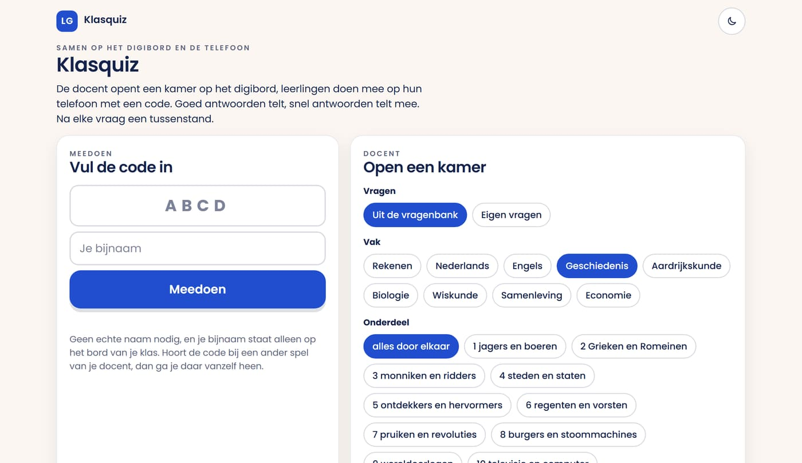
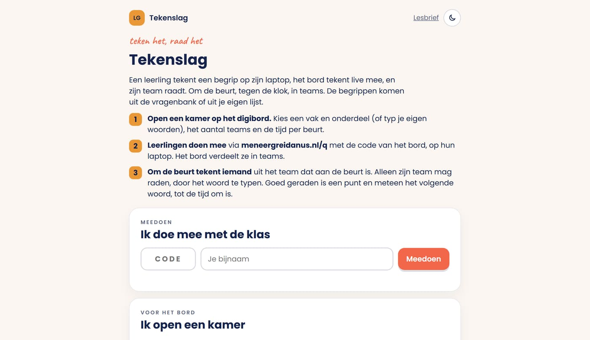
Snel oefenen, elke dag iets
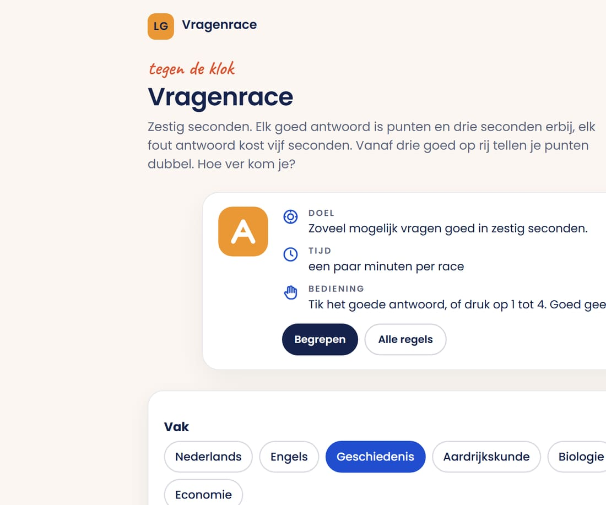
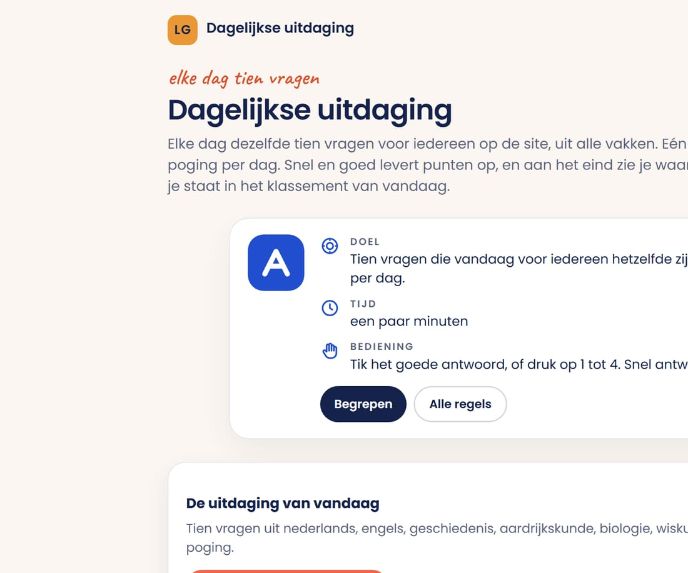
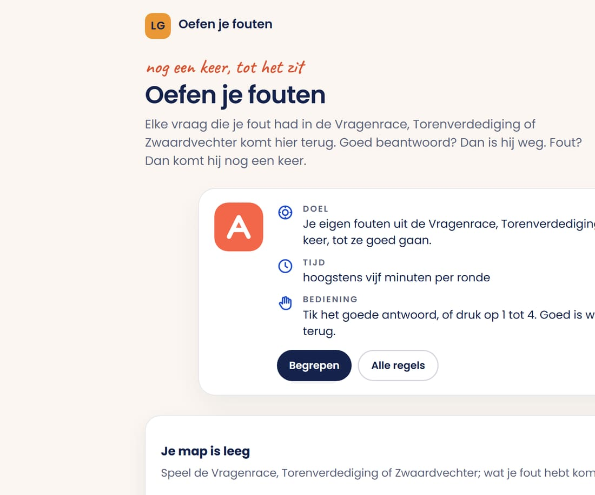
De grote spellen
Deze twee duren langer en zijn populair. De vragen zijn dezelfde als in de andere spellen; het spel eromheen is alleen leuker.
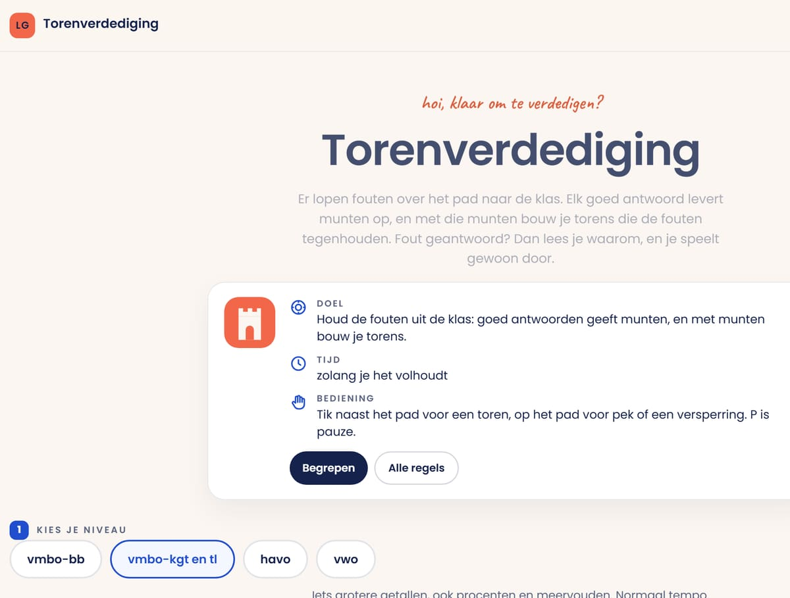
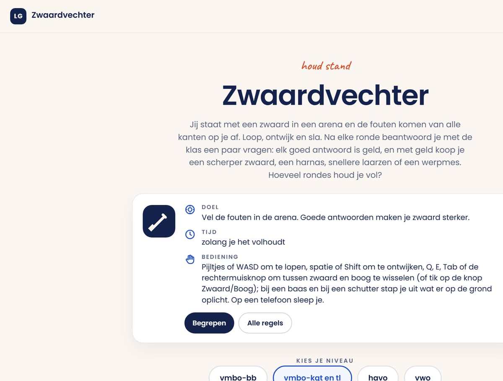
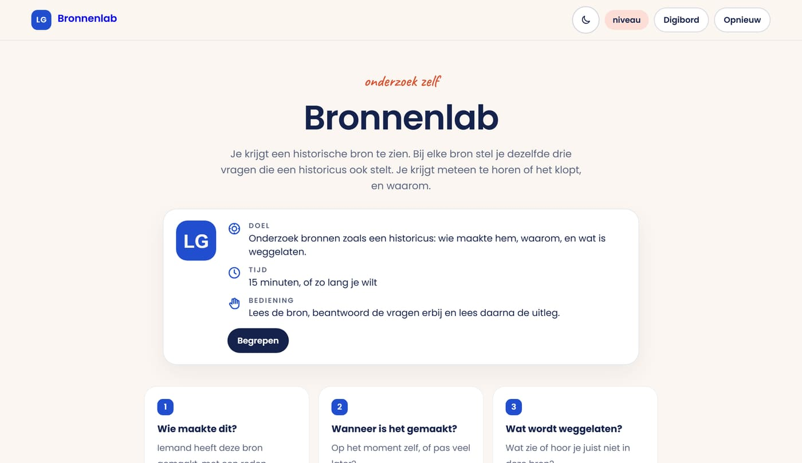
Lesbrieven en de demoklas
Bij elk spel staat een lesbrief: wat leren ze, hoe lang duurt het, wat doe je ervoor en erna. Handig als je snel iets zoekt voor het komende uur. Wil je eerst zien hoe een klasoverzicht eruitziet zonder je eigen klas? Klik in het docentgedeelte op demoklas: verzonnen leerlingen, om rond te kijken.
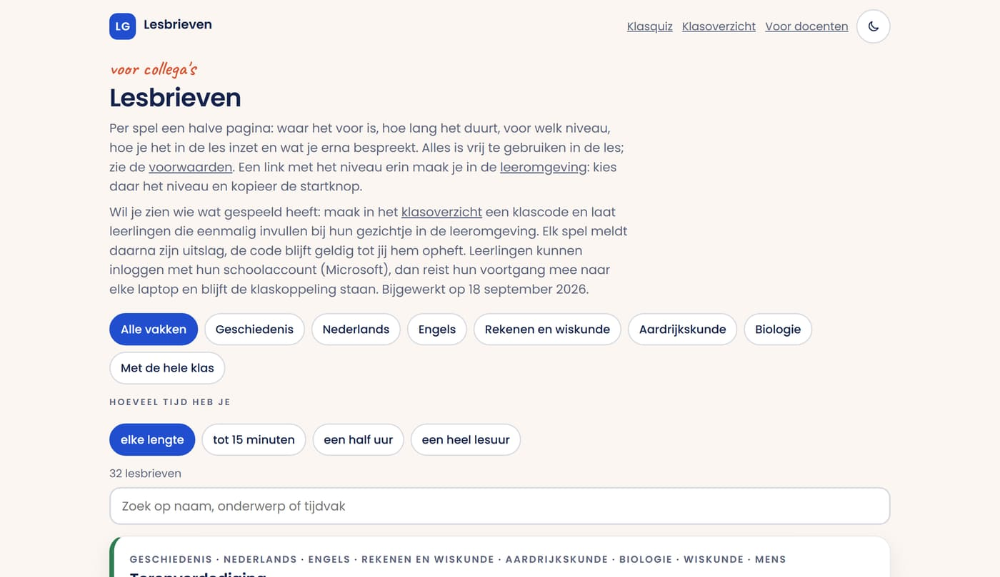
Vragen die vaker komen
Nee. Voor leerlingen is het een keuze (zie stap 5). Alleen jij als docent moet ingelogd zijn om een klascode te kunnen maken.
Zonder klascode niets buiten het apparaat van de leerling. Met een klascode: de bijnaam, het spel, de score en per onderdeel hoeveel er goed was. Geen namen, geen e-mail, geen adres. Jij kunt de klascode opheffen; dan is alles weg.
In het docentgedeelte staat hij onder Mijn klassen op dit apparaat. Staat hij daar niet meer, maak dan een nieuwe en laat de klas zich opnieuw koppelen. Log je in met Microsoft, dan kan dat niet gebeuren.
Ja, maar de spellen zijn gemaakt voor laptops en het digibord. Tekenslag en de Klasquiz werken het prettigst op een laptop.
Nee. Er zit geen reclame in, je hoeft niets te betalen en er is geen proefperiode.
Onder elke vraag staat Klopt deze vraag niet? Daar kunnen leerlingen (en jij) het melden. Ik kijk het na.
Graag. Deel de link gerust met collega's. Vragen of wensen? Mail gerust via de pagina Over mij.